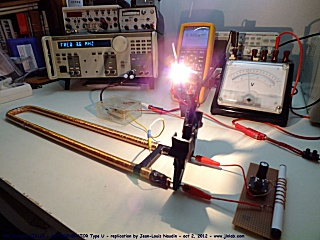

J'ai découvert récemment un excellent reportage vidéo effectué par Pascuser sur le physicien français retraité Richard VIALLE. Ce physicien expose sa théorie de la masse négative, un nouveau modèle de la gravitation et de la masse et ses applications à l'antigravitation et la génération surunitaire d'énergie électrique.
"Richard VIALLE a conçu cette théorie dans le début des années 1980, mais fait exceptionnel il a aussi réalisé des expériences qui en démontrent la validité. Il a obtenu des anomalies gravitationnelles et créé un générateur surunitaire (énergie libre) qui fonctionnent suivant sa théorie et ont été testés indépendamment et répliqués comme fonctionnels. Richard VIALLE expose d'abord sa théorie, les principes et les calculs qui l'expliquent dans une bonne partie de l'interview (plusieurs vidéos) puis il explique le fonctionnement des dispositifs qu'il a inventé, leur schématique et le moyen de les reproduire. Des films de fonctionnement des dispositifs expérimentaux de modification de la gravité (masse négative) et de surunité sont inclus dans l'interview/reportage. Ceci constitue le témoignage que Richard VIALLE veut léguer à l'humanité; la somme de presque 30 ans de travaux qui ont été peu diffusés jusque là. Il ne cherche pas à faire de l'argent ou à gagner de la gloire mais à diffuser son travail pour que chacun puisse librement le reproduire et s'en servir. Un homme avec un grand idéal." (Extrait des commentaires de Pascuser sur le reportage).
Après avoir lu les commentaires de Pascuser, et visionné les nombreuses vidéos de Richard VIALLE, je n'ai pu m'empêcher de me lancer dans l'exploration par l'expérience de cette intéressante théorie... et donc, je vais partager avec vous tous les résultats et schémas de mes expérimentations sur ce sujet.
Principe de l'Autogénérateur de Richard Vialle (explication simplifiée)
Je tiens à remercier Pascuser, sans son aide, je n'aurais pas pu réaliser une telle expérience. Je tiens aussi à féliciter toute l'équipe du projet de Richard Vialle pour leur détermination et leur volonté de partager leurs expériences pour le bénéfice de tous...
|
Documents vidéos et liens intéressants sur le projet de Richard Vialle:
retour au sommaire JLN Labs